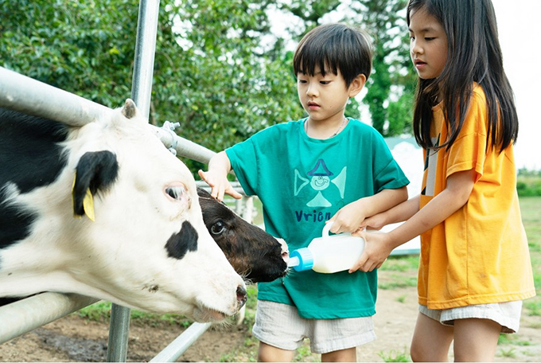
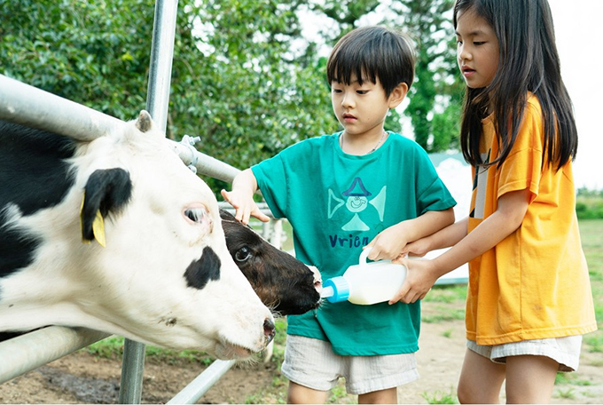
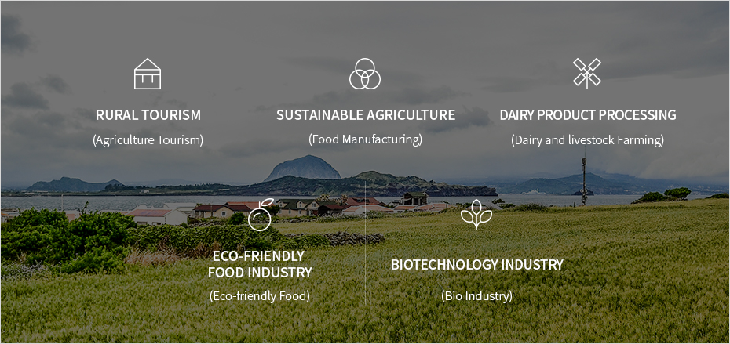

1차 산업
- Home
- Investment Environment
- Promising Industries
- Primary Industry
Primary Industry
 

Jeju Island has one of the most recognizable brands as a pristine natural environment in Asia and a world-class recreational tourism industry. In this respect, the sustainable primary industry of Jeju is a promising future industry full of potential.
High-quality agricultural, marine, livestock, and water resources abundant on the volcanic island have been popular among Asian consumers, including both Chinese and local consumers.
The environment-friendly brand development, which transforms pristine ingredients into products with high value added, and rural tourism combined with the island’s outstanding tourism infrastructure are expected to give Jeju Island a differentiated value proposition.
